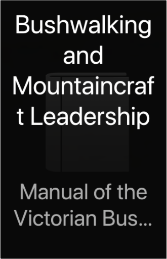

Midnight In the Garden of Good and EvilJohn Berendt Midnight In the Garden of Good and EvilJohn Berendt  The best non-fiction novel since "In Cold Blood" is a true story of intrigue, murder, forgery and eccentricity set in the steamy, surreal atmosphere of Savannah, Georgia. The unpredictable twists and turns of a murder case are skilfully interwoven with a hugely entertaining first-person account of life in this isolated remnant of the Old South. Short History of the WorldGeoffrey Blainey A superb history of the world's people during the last four million years, beginning before the human race moved out of Africa to explore and settle the other continents. Mr. Blainey explores the development of technology and skills, the rise of major religions, and the role of geography, considering both the larger patterns and the individual nature of history. A delightful read, gracefully written, and full of odd and interesting pieces of information as well as thoughtful comparisons that span both time and space. —William L. O'Neill Bushwalking and Mountaincraft LeadershipManual of the Victorian Bushwalking and Mountaincraft Training Advisory Board  The Tall Ships of Today in PhotographsFrank O. Braynard The Tall Ships of Today in PhotographsFrank O. Braynard Lavishly illustrated tribute to nearly 100 majestic sailing vessels now used as training ships and symbols of goodwill: Amerigo Vespucci, Clearwater, Constitution, Mayflower, Peking, Shenandoah, Victory, Viking and many more. Approximately 190 black-and-white photographs and other illustrations. Informative captions provide statistics, background information on each. Introduction. List of ships. Summer Classics Jane EyreCharlotte Bronte Orphaned into cruel charity at the hands of her rich cousins and later at Lowood school, Jane escapes to take up a position as a governess to the young ward of Mr Rochester. The story of their love affair, Jane's discovery of Rochester's secret and her desperate flight is an enduring classic.  Angels and DemonsDan Brown Angels and DemonsDan Brown When a scientist is found brutally murdered, Harvard professor Robert Langdon is asked to identify the mysterious symbol seared onto the dead man's chest. Realising it must be the work of the Illuminati - an ancient secret brotherhood sworn against Catholicism - the race is on to prevent a tragedy.  Preserving BookLynda Brown Preserving BookLynda Brown Take a tantalizing food journey with the Soil Association and find out how to create your own delicious preserves - with less sugar and no nasty additives. From luscious jams and jellies to savoury confits and salamis, discover how to preserve your wonderful fresh produce and create a wealth of fabulous preserves using the very best natural ingredients. From plot to plate, 45 essential techniques are covered, from salting and curing to preserving in oil, and easy-to-follow step-by-steps show you exactly what to do. With information on recommended equipment and over 200 delicious recipes based on traditional techniques, learn to preserve your gluts in produce and stock up your store cupboard for the whole year. |


 Made with Delicious Library
Made with Delicious LibrarySpringfield, State zipflap congrotus delicious library Doddridge, Edward